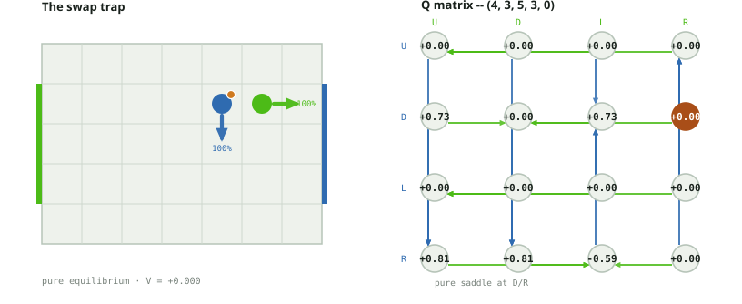
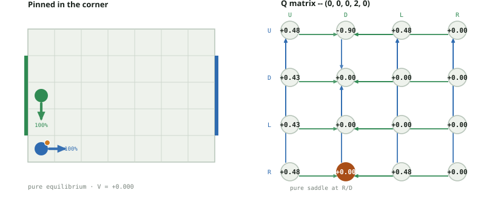
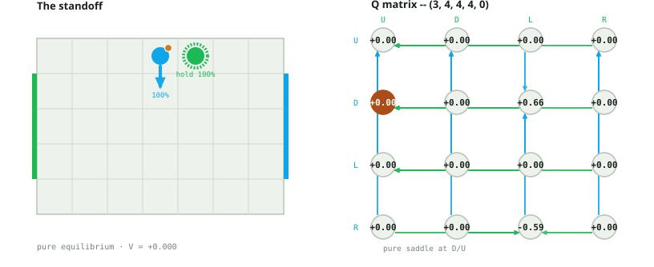
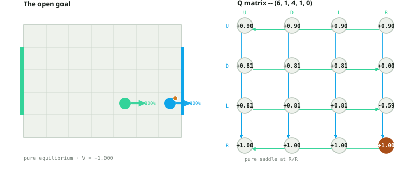
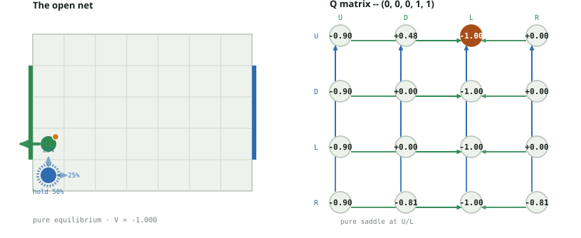
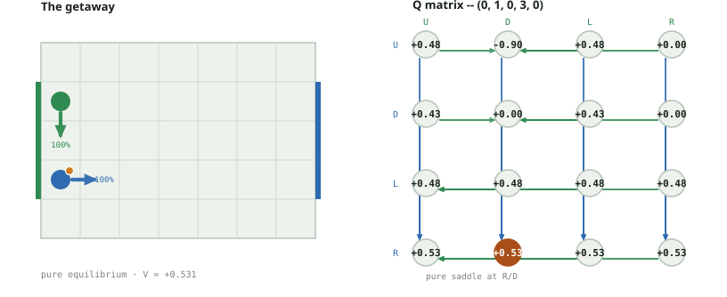
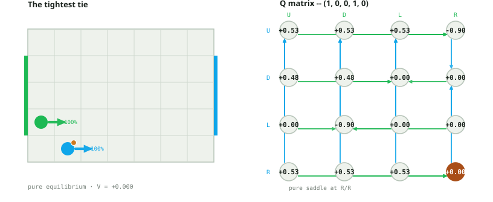
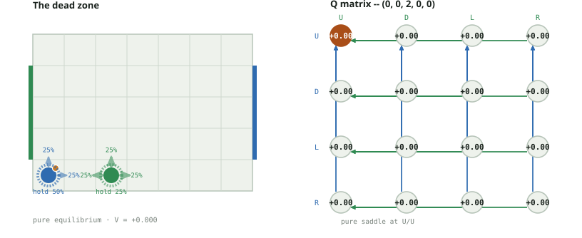

Soccer Markov Nash · A10-deterministic board
7 by 5 board; goal rows 1, 2, 3; simultaneous U/D/L/R; deterministic carrier-wins-contests resolution. Players never occupy the same square. The loser of a contested square or swap receives the ball.
Selection rule: preserve the best worst-case payoff, then maximize mean payoff over opponent actions among exact security ties. Identical-score ties use action order. The secondary criterion is a documented selection convention, not a claim that Nash equilibrium is unique. No uniform tie mix is substituted for the solver policy.
Why every probability below is 0% or 100%, never a fraction: this project's headline finding is that every stage game on this deterministic board has a pure equilibrium -- so a single action at 100% is the correct, expected answer here, not a simplification. Fractional probabilities only show up in the sibling document, positions.pdf, which covers Littman's cases on the random-move-order board, where mixed equilibria are the point. If you're looking for the mixed-strategy numbers, that is the document to read; this one is about what "pure but not obvious" looks like instead: ties, dominance, and the collision rule.
Case 1 selects Down for player 0: it weakly dominates Up and Left. The four zeros against Right describe optimal continuation from four new states, not a defender committed to Right forever. These are discounted stationary values with gamma 0.9, not the undiscounted 100-turn assignment.
This board's own rule keeps every stage game pure. The other four rule variants each trade that off for genuine mixed equilibria in some states -- see coinflip_cases.pdf (a fair coin decides contests instead of the carrier -- still 0 mixed, surprisingly), tackle_cases.pdf (a 50/50 duel, 56 of 760 mixed -- the richest source), territory_cases.pdf (a dense position reward, 69 of 2380 mixed), and slip_cases.pdf (movement noise, 52 of 1200 mixed).
Interactive explorer · Audit and reproduction details
State (4, 3, 5, 3, 0) · player 0 carries the ball · V = +0.000000
Security-tied alternatives (not probabilities): P0 U/D/L · P1 R
player 0's U/D/L never touch player 1 at all this turn, so all three guarantee at least 0. D weakly dominates U and L: it earns 0.729 against U/L, while U and L earn zero against every reply. The refined policy is D, not a uniform tie mix. Only R reaches player 1's square, and against L it triggers a genuine swap (verified below: (R, L) -> (5,3,4,3,1)) that hands player 1 the ball, dragging R's own worst case to -0.59. Player 1's unique safe column is R for an unrelated reason: U/D/L each let a smart player 0 reach a good, independent square elsewhere in the matrix (0.81/0.81/0.729) that has nothing to do with the swap cell.

| P0 / P1 | U | D | L | R |
|---|---|---|---|---|
| U | 0.000000 | 0.000000 | 0.000000 | 0.000000 |
| D | 0.729000 | 0.000000 | 0.729000 | 0.000000 |
| L | 0.000000 | 0.000000 | 0.000000 | 0.000000 |
| R | 0.810000 | 0.810000 | -0.590490 | 0.000000 |
| P0 / P1 | U | D | L | R |
|---|---|---|---|---|
| U | (4, 4, 5, 4, 0) | (4, 4, 5, 2, 0) | (4, 4, 4, 3, 0) | (4, 4, 6, 3, 0) |
| D | (4, 2, 5, 4, 0) | (4, 2, 5, 2, 0) | (4, 2, 4, 3, 0) | (4, 2, 6, 3, 0) |
| L | (3, 3, 5, 4, 0) | (3, 3, 5, 2, 0) | (3, 3, 4, 3, 0) | (3, 3, 6, 3, 0) |
| R | (5, 3, 5, 4, 0) | (5, 3, 5, 2, 0) | (5, 3, 4, 3, 1) | (5, 3, 6, 3, 0) |
max |QDQN − Qexact|: from zero = 0.4209 · fit to exact = 0.4869. "From zero" is 400 epochs of TD bootstrap from a random init with no access to the exact answer -- the honest baseline; "fit to exact" is direct supervised regression onto the exact matrices, isolating how well a network this size can even represent Qexact before any bootstrapping noise. One representative run each (seed 0), not the multi-seed study in docs/neural.md. Full per-state numbers for every board, plus a policy-gradient comparison, are in the interactive explorer's "Show neural cross-check" panel.
| P0 / P1 | Exact | DQN, from zero | DQN, fit to exact |
|---|---|---|---|
| U/U | 0.0000 | 0.2344 | 0.0128 |
| U/D | 0.0000 | 0.2672 | 0.1547 |
| U/L | 0.0000 | 0.2440 | 0.1559 |
| U/R | 0.0000 | 0.2150 | 0.0795 |
| D/U | 0.7290 | 0.3656 | 0.4529 |
| D/D | 0.0000 | 0.3172 | 0.1220 |
| D/L | 0.7290 | 0.5558 | 0.5696 |
| D/R | 0.0000 | 0.2156 | -0.1531 |
| L/U | 0.0000 | 0.1485 | -0.0693 |
| L/D | 0.0000 | 0.1586 | -0.0122 |
| L/L | 0.0000 | 0.1802 | 0.0685 |
| L/R | 0.0000 | 0.1910 | -0.0170 |
| R/U | 0.8100 | 0.4788 | 0.3794 |
| R/D | 0.8100 | 0.3891 | 0.3231 |
| R/L | -0.5905 | -0.2911 | -0.3680 |
| R/R | 0.0000 | 0.2988 | 0.0736 |
State (0, 0, 0, 2, 0) · player 0 carries the ball · V = +0.000000
Security-tied alternatives (not probabilities): P0 D/L/R · P1 D/R
player 0's U is the one risky action: it targets the empty cell (0,1), which player 1's D also targets. Neither player is standing there, so it's an open (non-blocked) contest -- player 0 physically wins the race ((U, D) -> (0,1,0,2,1)) but the A10 rule still gives the ball to the loser regardless of who reached the cell first, crashing the value to -0.9. D, L, and R never reach that cell, so they tie safely at 0.

| P0 / P1 | U | D | L | R |
|---|---|---|---|---|
| U | 0.478297 | -0.900000 | 0.478297 | 0.000000 |
| D | 0.430467 | 0.000000 | 0.000000 | 0.000000 |
| L | 0.430467 | 0.000000 | 0.000000 | 0.000000 |
| R | 0.478297 | 0.000000 | 0.478297 | 0.000000 |
| P0 / P1 | U | D | L | R |
|---|---|---|---|---|
| U | (0, 1, 0, 3, 0) | (0, 1, 0, 2, 1) | (0, 1, 0, 2, 0) | (0, 1, 1, 2, 0) |
| D | (0, 0, 0, 3, 0) | (0, 0, 0, 1, 0) | (0, 0, 0, 2, 0) | (0, 0, 1, 2, 0) |
| L | (0, 0, 0, 3, 0) | (0, 0, 0, 1, 0) | (0, 0, 0, 2, 0) | (0, 0, 1, 2, 0) |
| R | (1, 0, 0, 3, 0) | (1, 0, 0, 1, 0) | (1, 0, 0, 2, 0) | (1, 0, 1, 2, 0) |
max |QDQN − Qexact|: from zero = 0.5168 · fit to exact = 0.6558. "From zero" is 400 epochs of TD bootstrap from a random init with no access to the exact answer -- the honest baseline; "fit to exact" is direct supervised regression onto the exact matrices, isolating how well a network this size can even represent Qexact before any bootstrapping noise. One representative run each (seed 0), not the multi-seed study in docs/neural.md. Full per-state numbers for every board, plus a policy-gradient comparison, are in the interactive explorer's "Show neural cross-check" panel.
| P0 / P1 | Exact | DQN, from zero | DQN, fit to exact |
|---|---|---|---|
| U/U | 0.4783 | 0.2704 | 0.5110 |
| U/D | -0.9000 | -0.3832 | -0.2442 |
| U/L | 0.4783 | 0.2191 | 0.3945 |
| U/R | 0.0000 | 0.0232 | -0.0067 |
| D/U | 0.4305 | 0.2484 | 0.5116 |
| D/D | 0.0000 | -0.0452 | -0.0777 |
| D/L | 0.0000 | 0.0963 | 0.3703 |
| D/R | 0.0000 | 0.0582 | -0.1063 |
| L/U | 0.4305 | 0.1762 | 0.1956 |
| L/D | 0.0000 | -0.0492 | -0.3925 |
| L/L | 0.0000 | 0.1503 | 0.1425 |
| L/R | 0.0000 | 0.0897 | -0.0942 |
| R/U | 0.4783 | 0.3805 | 0.4999 |
| R/D | 0.0000 | 0.2344 | 0.2780 |
| R/L | 0.4783 | 0.2960 | 0.5072 |
| R/R | 0.0000 | 0.2674 | 0.2052 |
State (3, 4, 4, 4, 0) · player 0 carries the ball · V = +0.000000
Security-tied alternatives (not probabilities): P0 U/D/L · P1 U/D/R
both players are already on the top row, one cell apart. U is wall-clamped (a genuine no-op) for both -- not a real move upward. R is player 0's one risky action (it reaches player 1's square: blocked against U, a real swap against L); L is player 1's mirror risk. D never touches the opponent for either player, so U/D/L (player 0) and U/D/R (player 1) all tie at the exact same safe value.
Zero value is not an all-zero Q matrix. This state has 14 zero entries, but Q(D,L) = 0.656100 and Q(R,L) = -0.590490. V = 0 means the minimax value is zero; it does not mean every action pair is equally good.
A zero-reward self-loop alone cannot prove V = 0: another action might force a win. The audit checks every action pair at all 2,380 states and verifies that both pure security bounds equal the computed V. Exactly 514 states have all 16 raw entries zero, including case 8. No display rounding is used in this count. See the reward comparison appendix for Jae's matrix at this same state and the new DQN/PG experiments.

| P0 / P1 | U | D | L | R |
|---|---|---|---|---|
| U | 0.000000 | 0.000000 | 0.000000 | 0.000000 |
| D | 0.000000 | 0.000000 | 0.656100 | 0.000000 |
| L | 0.000000 | 0.000000 | 0.000000 | 0.000000 |
| R | 0.000000 | 0.000000 | -0.590490 | 0.000000 |
| P0 / P1 | U | D | L | R |
|---|---|---|---|---|
| U | (3, 4, 4, 4, 0) | (3, 4, 4, 3, 0) | (3, 4, 4, 4, 1) | (3, 4, 5, 4, 0) |
| D | (3, 3, 4, 4, 0) | (3, 3, 4, 3, 0) | (3, 3, 3, 4, 0) | (3, 3, 5, 4, 0) |
| L | (2, 4, 4, 4, 0) | (2, 4, 4, 3, 0) | (2, 4, 3, 4, 0) | (2, 4, 5, 4, 0) |
| R | (3, 4, 4, 4, 1) | (4, 4, 4, 3, 0) | (4, 4, 3, 4, 1) | (4, 4, 5, 4, 0) |
max |QDQN − Qexact|: from zero = 0.3001 · fit to exact = 0.2693. "From zero" is 400 epochs of TD bootstrap from a random init with no access to the exact answer -- the honest baseline; "fit to exact" is direct supervised regression onto the exact matrices, isolating how well a network this size can even represent Qexact before any bootstrapping noise. One representative run each (seed 0), not the multi-seed study in docs/neural.md. Full per-state numbers for every board, plus a policy-gradient comparison, are in the interactive explorer's "Show neural cross-check" panel.
| P0 / P1 | Exact | DQN, from zero | DQN, fit to exact |
|---|---|---|---|
| U/U | 0.0000 | 0.1211 | -0.0765 |
| U/D | 0.0000 | 0.0774 | 0.0149 |
| U/L | 0.0000 | 0.1048 | 0.0029 |
| U/R | 0.0000 | 0.1415 | 0.0550 |
| D/U | 0.0000 | 0.2338 | 0.2693 |
| D/D | 0.0000 | 0.2417 | 0.1020 |
| D/L | 0.6561 | 0.4552 | 0.4776 |
| D/R | 0.0000 | 0.2489 | -0.0465 |
| L/U | 0.0000 | 0.1602 | -0.1495 |
| L/D | 0.0000 | 0.1269 | -0.0593 |
| L/L | 0.0000 | 0.1386 | -0.0028 |
| L/R | 0.0000 | 0.1168 | 0.0294 |
| R/U | 0.0000 | 0.2445 | 0.1532 |
| R/D | 0.0000 | 0.2369 | 0.1146 |
| R/L | -0.5905 | -0.2904 | -0.3455 |
| R/R | 0.0000 | 0.1815 | -0.0441 |
State (6, 1, 4, 1, 0) · player 0 carries the ball · V = +1.000000
Security-tied alternatives (not probabilities): P0 R · P1 U/D/L/R
player 0 already sits at the right wall in a goal row, with the ball. Off a goal row this exact same boundary push would just hold in place -- here it scores instead: verified, game.transitions() returns a terminal player-0 win for R against every one of player 1's replies. R is the unique optimum (maximin 1.0); player 1's columns all tie at minimax 1.0 too, because there is nothing any of them can do about it.

| P0 / P1 | U | D | L | R |
|---|---|---|---|---|
| U | 0.900000 | 0.900000 | 0.900000 | 0.900000 |
| D | 0.810000 | 0.810000 | 0.810000 | 0.000000 |
| L | 0.810000 | 0.810000 | 0.810000 | -0.590490 |
| R | 1.000000 | 1.000000 | 1.000000 | 1.000000 |
| P0 / P1 | U | D | L | R |
|---|---|---|---|---|
| U | (6, 2, 4, 2, 0) | (6, 2, 4, 0, 0) | (6, 2, 3, 1, 0) | (6, 2, 5, 1, 0) |
| D | (6, 0, 4, 2, 0) | (6, 0, 4, 0, 0) | (6, 0, 3, 1, 0) | (6, 0, 5, 1, 0) |
| L | (5, 1, 4, 2, 0) | (5, 1, 4, 0, 0) | (5, 1, 3, 1, 0) | (5, 1, 4, 1, 1) |
| R | (-1, -1, -1, -1, 0) | (-1, -1, -1, -1, 0) | (-1, -1, -1, -1, 0) | (-1, -1, -1, -1, 0) |
max |QDQN − Qexact|: from zero = 0.4231 · fit to exact = 0.7772. "From zero" is 400 epochs of TD bootstrap from a random init with no access to the exact answer -- the honest baseline; "fit to exact" is direct supervised regression onto the exact matrices, isolating how well a network this size can even represent Qexact before any bootstrapping noise. One representative run each (seed 0), not the multi-seed study in docs/neural.md. Full per-state numbers for every board, plus a policy-gradient comparison, are in the interactive explorer's "Show neural cross-check" panel.
| P0 / P1 | Exact | DQN, from zero | DQN, fit to exact |
|---|---|---|---|
| U/U | 0.9000 | 0.9198 | 1.0031 |
| U/D | 0.9000 | 0.9515 | 1.0593 |
| U/L | 0.9000 | 0.9224 | 0.8627 |
| U/R | 0.9000 | 0.8560 | 0.9428 |
| D/U | 0.8100 | 0.6815 | 0.7381 |
| D/D | 0.8100 | 0.6681 | 0.8416 |
| D/L | 0.8100 | 0.7383 | 0.7128 |
| D/R | 0.0000 | 0.4231 | 0.5073 |
| L/U | 0.8100 | 0.6379 | 0.8170 |
| L/D | 0.8100 | 0.7279 | 0.9228 |
| L/L | 0.8100 | 0.7493 | 0.7831 |
| L/R | -0.5905 | -0.1917 | 0.1867 |
| R/U | 1.0000 | 1.0035 | 0.9647 |
| R/D | 1.0000 | 0.9963 | 1.0290 |
| R/L | 1.0000 | 1.1082 | 1.2321 |
| R/R | 1.0000 | 0.9655 | 0.9798 |
State (0, 0, 0, 1, 1) · player 1 carries the ball · V = -1.000000
Security-tied alternatives (not probabilities): P0 U/D/L/R · P1 L
the mirror of the open goal from player 1's side: player 1 is at the left wall in a goal row, ball in hand, and L scores unconditionally (verified against every reply). The bleaker half of this case is player 0's row: every one of U/D/L/R ties at the exact same -1.0 -- there is nothing player 0 can do differently that changes the outcome, which is itself worth seeing on a board rather than only in a number.

| P0 / P1 | U | D | L | R |
|---|---|---|---|---|
| U | -0.900000 | 0.478297 | -1.000000 | 0.000000 |
| D | -0.900000 | 0.000000 | -1.000000 | 0.000000 |
| L | -0.900000 | 0.000000 | -1.000000 | 0.000000 |
| R | -0.900000 | -0.810000 | -1.000000 | -0.810000 |
| P0 / P1 | U | D | L | R |
|---|---|---|---|---|
| U | (0, 1, 0, 2, 1) | (0, 1, 0, 0, 0) | (-1, -1, -1, -1, 1) | (0, 1, 1, 1, 1) |
| D | (0, 0, 0, 2, 1) | (0, 0, 0, 1, 0) | (-1, -1, -1, -1, 1) | (0, 0, 1, 1, 1) |
| L | (0, 0, 0, 2, 1) | (0, 0, 0, 1, 0) | (-1, -1, -1, -1, 1) | (0, 0, 1, 1, 1) |
| R | (1, 0, 0, 2, 1) | (1, 0, 0, 0, 1) | (-1, -1, -1, -1, 1) | (1, 0, 1, 1, 1) |
max |QDQN − Qexact|: from zero = 0.4947 · fit to exact = 0.4049. "From zero" is 400 epochs of TD bootstrap from a random init with no access to the exact answer -- the honest baseline; "fit to exact" is direct supervised regression onto the exact matrices, isolating how well a network this size can even represent Qexact before any bootstrapping noise. One representative run each (seed 0), not the multi-seed study in docs/neural.md. Full per-state numbers for every board, plus a policy-gradient comparison, are in the interactive explorer's "Show neural cross-check" panel.
| P0 / P1 | Exact | DQN, from zero | DQN, fit to exact |
|---|---|---|---|
| U/U | -0.9000 | -0.6967 | -0.6653 |
| U/D | 0.4783 | 0.3357 | 0.3346 |
| U/L | -1.0000 | -0.7185 | -0.7320 |
| U/R | 0.0000 | -0.3544 | 0.0854 |
| D/U | -0.9000 | -0.9347 | -1.0265 |
| D/D | 0.0000 | -0.1585 | -0.3353 |
| D/L | -1.0000 | -0.9130 | -0.8393 |
| D/R | 0.0000 | -0.3615 | -0.4049 |
| L/U | -0.9000 | -0.7078 | -0.7625 |
| L/D | 0.0000 | -0.0688 | 0.1335 |
| L/L | -1.0000 | -0.8956 | -0.7354 |
| L/R | 0.0000 | -0.2438 | -0.0471 |
| R/U | -0.9000 | -0.9099 | -0.9654 |
| R/D | -0.8100 | -0.3153 | -0.5793 |
| R/L | -1.0000 | -1.0282 | -0.8748 |
| R/R | -0.8100 | -0.5346 | -0.5617 |
State (0, 1, 0, 3, 0) · player 0 carries the ball · V = +0.531441
Security-tied alternatives (not probabilities): P0 R · P1 U/D/L/R
R is player 0's *unique* safe action (0.531441, no tie) -- an entirely independent move to (1,1) that never depends on player 1's reply. U looks just as reasonable but is a trap: against D, both target the same empty cell (0,2); player 0 wins the race there (verified: (U, D) -> (0,2,0,3,1)) and immediately loses the ball anyway, crashing to -0.9. Player 1's columns all tie at 0.531441 -- there is no reply that slows the escape down.

| P0 / P1 | U | D | L | R |
|---|---|---|---|---|
| U | 0.478297 | -0.900000 | 0.478297 | 0.000000 |
| D | 0.430467 | 0.000000 | 0.430467 | 0.000000 |
| L | 0.478297 | 0.478297 | 0.478297 | 0.478297 |
| R | 0.531441 | 0.531441 | 0.531441 | 0.531441 |
| P0 / P1 | U | D | L | R |
|---|---|---|---|---|
| U | (0, 2, 0, 4, 0) | (0, 2, 0, 3, 1) | (0, 2, 0, 3, 0) | (0, 2, 1, 3, 0) |
| D | (0, 0, 0, 4, 0) | (0, 0, 0, 2, 0) | (0, 0, 0, 3, 0) | (0, 0, 1, 3, 0) |
| L | (0, 1, 0, 4, 0) | (0, 1, 0, 2, 0) | (0, 1, 0, 3, 0) | (0, 1, 1, 3, 0) |
| R | (1, 1, 0, 4, 0) | (1, 1, 0, 2, 0) | (1, 1, 0, 3, 0) | (1, 1, 1, 3, 0) |
max |QDQN − Qexact|: from zero = 0.6241 · fit to exact = 0.6223. "From zero" is 400 epochs of TD bootstrap from a random init with no access to the exact answer -- the honest baseline; "fit to exact" is direct supervised regression onto the exact matrices, isolating how well a network this size can even represent Qexact before any bootstrapping noise. One representative run each (seed 0), not the multi-seed study in docs/neural.md. Full per-state numbers for every board, plus a policy-gradient comparison, are in the interactive explorer's "Show neural cross-check" panel.
| P0 / P1 | Exact | DQN, from zero | DQN, fit to exact |
|---|---|---|---|
| U/U | 0.4783 | 0.2979 | 0.5357 |
| U/D | -0.9000 | -0.2759 | -0.2777 |
| U/L | 0.4783 | 0.2296 | 0.3890 |
| U/R | 0.0000 | 0.0898 | 0.1222 |
| D/U | 0.4305 | 0.3734 | 0.4584 |
| D/D | 0.0000 | 0.2029 | 0.0880 |
| D/L | 0.4305 | 0.2627 | 0.3620 |
| D/R | 0.0000 | 0.1858 | 0.1598 |
| L/U | 0.4783 | 0.3046 | 0.4892 |
| L/D | 0.4783 | -0.0476 | -0.0927 |
| L/L | 0.4783 | 0.3345 | 0.4042 |
| L/R | 0.4783 | 0.1470 | 0.2213 |
| R/U | 0.5314 | 0.4519 | 0.5313 |
| R/D | 0.5314 | 0.4052 | 0.4881 |
| R/L | 0.5314 | 0.4103 | 0.4914 |
| R/R | 0.5314 | 0.4345 | 0.4883 |
State (1, 0, 0, 1, 0) · player 0 carries the ball · V = +0.000000
Security-tied alternatives (not probabilities): P0 D/R · P1 R
no state on this entire board ever has a fully unique best action for *both* players simultaneously -- checked exhaustively, (1,1) never occurs among all 2380 states. This is the smallest tie shape that does occur (only 16 of 2380 states): player 0's D and R tie exactly; player 1's R is uniquely optimal. U and L each look just as safe as D/R, but each hides its own contest: (U, R) both target the same cell (1,1), and (L, D) both target (0,0) -- verified below, the carrier wins the square but the ball still goes to the defender either way -- while D and R never target the same cell as player 1 at all.

| P0 / P1 | U | D | L | R |
|---|---|---|---|---|
| U | 0.531441 | 0.531441 | 0.531441 | -0.900000 |
| D | 0.478297 | 0.478297 | 0.000000 | 0.000000 |
| L | 0.000000 | -0.900000 | 0.000000 | 0.000000 |
| R | 0.531441 | 0.531441 | 0.531441 | 0.000000 |
| P0 / P1 | U | D | L | R |
|---|---|---|---|---|
| U | (1, 1, 0, 2, 0) | (1, 1, 0, 0, 0) | (1, 1, 0, 1, 0) | (1, 1, 0, 1, 1) |
| D | (1, 0, 0, 2, 0) | (1, 0, 0, 0, 0) | (1, 0, 0, 1, 0) | (1, 0, 1, 1, 0) |
| L | (0, 0, 0, 2, 0) | (0, 0, 0, 1, 1) | (0, 0, 0, 1, 0) | (0, 0, 1, 1, 0) |
| R | (2, 0, 0, 2, 0) | (2, 0, 0, 0, 0) | (2, 0, 0, 1, 0) | (2, 0, 1, 1, 0) |
max |QDQN − Qexact|: from zero = 0.3929 · fit to exact = 0.5398. "From zero" is 400 epochs of TD bootstrap from a random init with no access to the exact answer -- the honest baseline; "fit to exact" is direct supervised regression onto the exact matrices, isolating how well a network this size can even represent Qexact before any bootstrapping noise. One representative run each (seed 0), not the multi-seed study in docs/neural.md. Full per-state numbers for every board, plus a policy-gradient comparison, are in the interactive explorer's "Show neural cross-check" panel.
| P0 / P1 | Exact | DQN, from zero | DQN, fit to exact |
|---|---|---|---|
| U/U | 0.5314 | 0.3744 | 0.4738 |
| U/D | 0.5314 | 0.3351 | 0.1921 |
| U/L | 0.5314 | 0.2442 | 0.5397 |
| U/R | -0.9000 | -0.5770 | -0.3602 |
| D/U | 0.4783 | 0.2666 | 0.2314 |
| D/D | 0.4783 | 0.0854 | 0.2215 |
| D/L | 0.0000 | 0.2194 | 0.4356 |
| D/R | 0.0000 | 0.0576 | -0.2646 |
| L/U | 0.0000 | 0.1828 | 0.0154 |
| L/D | -0.9000 | -0.7350 | -0.5569 |
| L/L | 0.0000 | -0.0909 | 0.1429 |
| L/R | 0.0000 | -0.0770 | -0.2302 |
| R/U | 0.5314 | 0.4398 | 0.5306 |
| R/D | 0.5314 | 0.4147 | 0.5372 |
| R/L | 0.5314 | 0.4231 | 0.5675 |
| R/R | 0.0000 | 0.2691 | 0.1459 |
State (0, 0, 2, 0, 0) · player 0 carries the ball · V = +0.000000
Security-tied alternatives (not probabilities): P0 U/D/L/R · P1 U/D/L/R
the single most common shape on the whole board (514 of 2380 states): both players are fully indifferent among all four actions. It is not merely that the guaranteed values tie -- every one of the 16 cells in the Q matrix is exactly 0.0, including a genuine ball-swapping contest ((R, L) -> a state that is itself also worth exactly 0, verified below). All successors have the same optimal-continuation value, although their physical positions differ.

| P0 / P1 | U | D | L | R |
|---|---|---|---|---|
| U | 0.000000 | 0.000000 | 0.000000 | 0.000000 |
| D | 0.000000 | 0.000000 | 0.000000 | 0.000000 |
| L | 0.000000 | 0.000000 | 0.000000 | 0.000000 |
| R | 0.000000 | 0.000000 | 0.000000 | 0.000000 |
| P0 / P1 | U | D | L | R |
|---|---|---|---|---|
| U | (0, 1, 2, 1, 0) | (0, 1, 2, 0, 0) | (0, 1, 1, 0, 0) | (0, 1, 3, 0, 0) |
| D | (0, 0, 2, 1, 0) | (0, 0, 2, 0, 0) | (0, 0, 1, 0, 0) | (0, 0, 3, 0, 0) |
| L | (0, 0, 2, 1, 0) | (0, 0, 2, 0, 0) | (0, 0, 1, 0, 0) | (0, 0, 3, 0, 0) |
| R | (1, 0, 2, 1, 0) | (1, 0, 2, 0, 0) | (1, 0, 2, 0, 1) | (1, 0, 3, 0, 0) |
max |QDQN − Qexact|: from zero = 0.1744 · fit to exact = 0.1498. "From zero" is 400 epochs of TD bootstrap from a random init with no access to the exact answer -- the honest baseline; "fit to exact" is direct supervised regression onto the exact matrices, isolating how well a network this size can even represent Qexact before any bootstrapping noise. One representative run each (seed 0), not the multi-seed study in docs/neural.md. Full per-state numbers for every board, plus a policy-gradient comparison, are in the interactive explorer's "Show neural cross-check" panel.
| P0 / P1 | Exact | DQN, from zero | DQN, fit to exact |
|---|---|---|---|
| U/U | 0.0000 | 0.0451 | -0.0391 |
| U/D | 0.0000 | 0.0795 | -0.0000 |
| U/L | 0.0000 | 0.0911 | 0.1498 |
| U/R | 0.0000 | 0.0089 | 0.0374 |
| D/U | 0.0000 | 0.0130 | 0.0521 |
| D/D | 0.0000 | 0.0878 | -0.0250 |
| D/L | 0.0000 | -0.0387 | 0.0207 |
| D/R | 0.0000 | 0.0907 | 0.0729 |
| L/U | 0.0000 | 0.0408 | 0.0076 |
| L/D | 0.0000 | 0.0560 | -0.0179 |
| L/L | 0.0000 | -0.0322 | -0.0095 |
| L/R | 0.0000 | 0.0744 | 0.0280 |
| R/U | 0.0000 | 0.0784 | -0.0684 |
| R/D | 0.0000 | 0.0770 | 0.0203 |
| R/L | 0.0000 | -0.1744 | -0.0493 |
| R/R | 0.0000 | 0.0457 | -0.0414 |
Verified against Jae Woo Song's public viewer and deterministic data, September 28, 2026. Same state: (3,4,4,4,0); gamma = 0.9. Rows and columns are U, D, L, R; every entry is player 0's return.
Your default: +1/-1 at a terminal goal; zero otherwise. Jae: the same terminal rewards, but every nonterminal next state pays 0.005 + 0.005*x0 when player 0 carries, or -(0.005 + 0.005*(6-x1)) when player 1 carries. No bonus on terminal goals. The bonus rewards position held, not change in distance.
| P0 / P1 | U | D | L | R |
|---|---|---|---|---|
| U | 0.000000 | 0.000000 | 0.000000 | 0.000000 |
| D | 0.000000 | 0.000000 | 0.656100 | 0.000000 |
| L | 0.000000 | 0.000000 | 0.000000 | 0.000000 |
| R | 0.000000 | 0.000000 | -0.590490 | 0.000000 |
| P0 / P1 | U | D | L | R |
|---|---|---|---|---|
| U | 0.200000 | 0.200000 | -0.150000 | 0.200000 |
| D | 0.200000 | 0.277113 | 0.748415 | 0.245000 |
| L | 0.150000 | 0.195000 | 0.150000 | 0.195000 |
| R | -0.150000 | 0.299050 | -0.705769 | 0.250000 |
For (U,U), possession remains with player 0 at x=3: reward = 0.020, so Q = 0.020 + 0.9*0.2 = 0.2. For (U,L), possession changes: reward = -0.015 and next value = -0.15, giving Q = -0.15. These are reward units, not winning probabilities.
The reproduced matrix matches all 16 screenshot entries to six decimal places (maximum difference 5.00e-07). Across all 38,080 state/action pairs, transition and reward mismatches: 0. Maximum difference from Jae's published values: 5.00e-09; reconstructed Q: 4.50e-09. His stored V values use eight decimal places.
The professor's concern needs a full check. One zero-reward self-loop is insufficient proof: deviations may lead to a win. We check every action pair and each policy's guaranteed payoff at every state. Both bounds must agree with V. The sparse board's maximum residual is zero at machine precision. An additional certificate checks every Bellman equality with exact fractions at gamma=9/10: 514 of 2,380 matrices are exactly zero before formatting. The screenshot state has 14 zeros, not 16. A zero minimax value does not imply that every future policy draws.
Jae's reward produces 62 mixed states; its maximum equilibrium gap is 2.22e-16 and Bellman residual is 1.67e-16. It changes the objective and can change the equilibrium, not merely the printed scale.
Learned experiments: two random seeds, hidden width 64, 400 fitted minimax-DQN epochs and 1,000 PG iterations with 100-step rollouts per reward model. No exact targets were provided during training. MAE and maximum absolute error below cover all 38,080 Q entries.
| Reward / seed | DQN MAE | DQN max | PG Q-policy MAE | PG max |
|---|---|---|---|---|
| Sparse / 0 | 0.1404 | 1.0429 | 0.1852 | 0.9015 |
| Sparse / 1 | 0.1455 | 1.0909 | 0.2143 | 0.7491 |
| Jae / 0 | 0.1152 | 1.1634 | 0.1550 | 0.8514 |
| Jae / 1 | 0.1071 | 1.2862 | 0.1405 | 0.9393 |
DQN approximates equilibrium Q. PG returns probabilities, not a Q matrix: its Q-policy here is computed by exact evaluation of the learned pair, followed by r + gamma*V-policy(next). It equals equilibrium Q only if the learned policies reach an equilibrium. These finite runs do not establish neural convergence. Full matrices for all eight cases are in experiments/reward_q_audit.json.
Defect fixed: PG restarted after goals but its return calculation included the next game's rewards. Both independent and shared trainers now stop returns at terminal boundaries. The regression example [0,+1,-1] with the last two steps terminal now returns [.9,1,-1], not [.09,.1,-1]. The sparse exact solver's zeros were not caused by this PG defect.
Sources: Jae's reward/transition source; Littman (1994), minimax Markov games; Ng et al. (1999), potential-based shaping; Wei et al. (2021), specialized optimistic actor-critic convergence. The latter is not a guarantee for vanilla REINFORCE. Arbitrary recurring bonuses should not be assumed policy-invariant. Reproduction and source hashes: reward-q-audit.md.